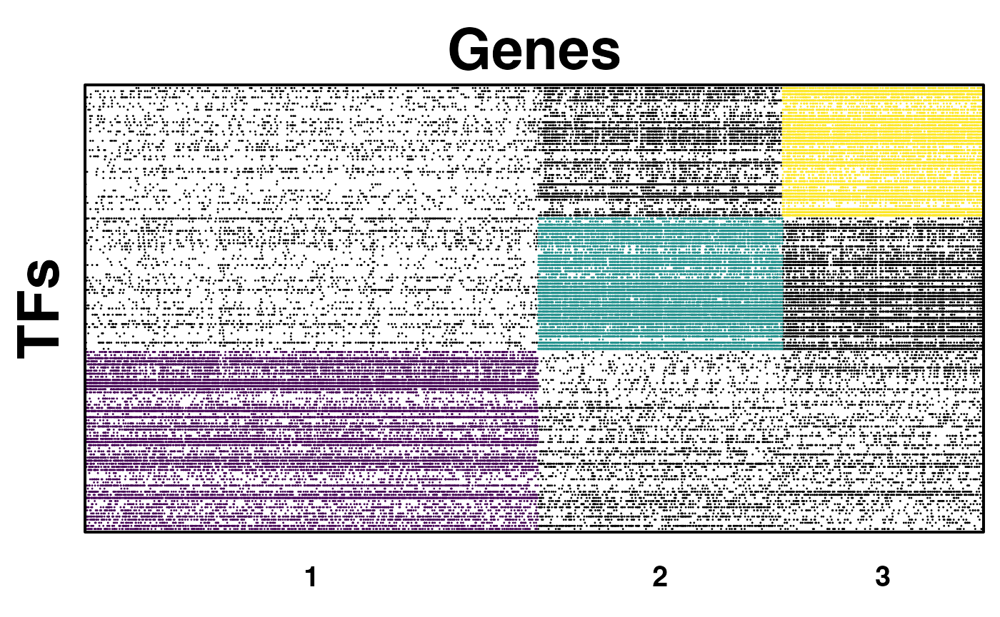

netZooR application with TB dataset
Tian Wang
2019-10-16
Source:vignettes/ApplicationwithTBdataset.Rmd
ApplicationwithTBdataset.RmdIntroduction
netZooR is an R package which consists of seven main algorithms and is able to construct, analyse and plot gene regulatory networks.
PANDA(Passing Attributes between Networks for Data Assimilation) is a message-passing model to gene regulatory network reconstruction. It integrates multiple sources of biological data, including protein-protein interaction, gene expression, and transcription factor binding motifs information to reconstruct genome-wide, condition-specific regulatory networks.[Glass et al. 2013]
LIONESS(Linear Interpolation to Obtain Network Estimates for Single Samples) is a method to estimate sample-specific regulatory networks by applying linear interpolation to the predictions made by existing aggregate network inference approaches.[[Kuijjer et al. 2019]]](https://www.sciencedirect.com/science/article/pii/S2589004219300872)
CONDOR (COmplex Network Description Of Regulators) implements methods to cluster biapartite networks and estimatiing the contribution of each node to its community’s modularity.[Platig et al. 2016]
ALPACA(ALtered Partitions Across Community Architectures) is a method to compare two genome-scale networks derived from different phenotypic states to identify condition-specific modules. [Padi and Quackenbush 2018]
SAMBAR(Subtyping Agglomerated Mutations By Annotation Relations) is a method to identify subtypes based on somatic mutation data.[Kuijjer et al.].
MONSTER(Modeling Network State Transitions from Expression and Regulatory data)[Schlauch et al.]: infers transcription factor which drivers of cell state conditions at the gene regulatory network level.
OTTER(Optimization to Estimate Regulation) [publication in preparation]: models gene regulation estimation as a graph matrching problem
Installation
Prerequisites
Using this pacakage requires Python (3.X) and some Python libraries, R (>= 3.3.3), and stable Internet access.
Some plotting functions will require the Cytoscape installed.
Required Python libraries
How to install Python libraries depends varies from different platforms. More instructions could be find here.
The following Python libraries (or packages) are required by running PANDA and LIONESS algorithms:
The required Python packages are: pandas, numpy, networkx, matplotlib.pyplot.
Installing
This package could be downloaded via install_github()
function from devtools package.
# install.packages("devtools")
library(devtools)
# install netZooR pkg with vignettes, otherwise remove the "build_vignettes = TRUE" argument.
devtools::install_github("netZoo/netZooR", build_vignettes = TRUE)
library(viridisLite)#To visualize communitiesData Resources
Motif data
Here is some pre-prepared specie-sepcific PANDA-ready transcription factor binding motifs data stored in our AWS bucket https://s3.console.aws.amazon.com/s3/buckets/netzoo/netZooR/example_datasets/PANDA_ready_motif_prior/?region=us-east-2&tab=overview, which are derived from motif scan and motif info files located on https://sites.google.com/a/channing.harvard.edu/kimberlyglass/tools/resourcesby .
PPI
This package includes a function source.PPI may source a
Protein-Protein Interactions (PPI) througt STRING database given a list
of proteins of interest. The STRINGdb
is already loaded while loading netZooR.
# TF is a data frame with single column filled with TFs of Mycobacterium tuberculosis H37Rv.
PPI <- source.PPI(TF, STRING.version="10", species.index=83332, score_threshold=0)Running the sample TB datasets
library(netZooR)
#> Loading required package: igraph
#>
#> Attaching package: 'igraph'
#> The following objects are masked from 'package:stats':
#>
#> decompose, spectrum
#> The following object is masked from 'package:base':
#>
#> union
#> Loading required package: reticulate
#> Loading required package: pandaR
#> Loading required package: Biobase
#> Loading required package: BiocGenerics
#>
#> Attaching package: 'BiocGenerics'
#> The following objects are masked from 'package:igraph':
#>
#> normalize, path, union
#> The following objects are masked from 'package:stats':
#>
#> IQR, mad, sd, var, xtabs
#> The following objects are masked from 'package:base':
#>
#> anyDuplicated, aperm, append, as.data.frame, basename, cbind,
#> colnames, dirname, do.call, duplicated, eval, evalq, Filter, Find,
#> get, grep, grepl, intersect, is.unsorted, lapply, Map, mapply,
#> match, mget, order, paste, pmax, pmax.int, pmin, pmin.int,
#> Position, rank, rbind, Reduce, rownames, sapply, setdiff, sort,
#> table, tapply, union, unique, unsplit, which.max, which.min
#> Welcome to Bioconductor
#>
#> Vignettes contain introductory material; view with
#> 'browseVignettes()'. To cite Bioconductor, see
#> 'citation("Biobase")', and for packages 'citation("pkgname")'.
#> Loading required package: matrixcalc
#>
#> Attaching package: 'matrixcalc'
#> The following object is masked from 'package:igraph':
#>
#> %s%
#>
#>
#> Setting options('download.file.method.GEOquery'='auto')
#> Setting options('GEOquery.inmemory.gpl'=FALSE)Accessing the help pages for the usage of core functions.
?pandaPy
?createCondorObject
?pandaToCondorObject
?lionessPy
?alpaca
?pandaToAlpaca
?sambarThis package will invoke the Python in R environment through reticulate package. Configure which version of Python to use if necessary, here in netZooR, Python 3.X is required. More details can be found here
#check your Python configuration and the specific version of Python in use currently
py_config()
# reset to Python 3.X if necessary, like below:
use_python("/usr/local/bin/python3")The previous command is necessary to bind R to Python since we are calling PANDA from Python because netZooPy has an optimized implementation of PANDA. Check this tutorial for an example using a pure R implementation of PANDA. Use example data sets within package to test this package. Refer to four input datasets files: one TB expression dataset control group , one TB expression dataset treated, one transcription factor binding motifs dataset, and one protein-protein interaction datasets from either inst/extdat or AWS.
retrieve the file path of these files came with the netZooR package.
# retrieve the file path of these files
treated_expression_file_path <- system.file("extdata", "expr4_matched.txt", package = "netZooR", mustWork = TRUE)
control_expression_file_path <- system.file("extdata", "expr10_matched.txt", package = "netZooR", mustWork = TRUE)
motif_file_path <- system.file("extdata", "chip_matched.txt", package = "netZooR", mustWork = TRUE)
ppi_file_path <- system.file("extdata", "ppi_matched.txt", package = "netZooR", mustWork = TRUE)PANDA algorithm
Assign the above file paths to flag e(refers to
“expression dataset”), m(refers to “motif dataset”), and
ppi(refers to “PPI” dataset), respectively. Then set option
rm_missing to TRUE to run
PANDA to generate an aggregate network without
unmatched TF and genes.
Repeat with control group.
treated_all_panda_result <- pandaPy(expr_file = treated_expression_file_path, motif_file = motif_file_path, ppi_file= ppi_file_path,modeProcess="legacy", remove_missing = TRUE )
control_all_panda_result <- pandaPy(expr_file = control_expression_file_path,motif_file = motif_file_path, ppi_file= ppi_file_path,modeProcess="legacy", remove_missing = TRUE )Vector treated_all_panda_result and vector
control_all_panda_result below are large lists with three
elements: the entire PANDA network, indegree (“to” nodes) nodes and
score, outdegree (“from” nodes) nodes and score. Use
$panda,$indegree and $outdegree
to access each list item resepctively.
Use $pandato access the entire PANDA network.
treated_net <- treated_all_panda_result$panda
control_net <- control_all_panda_result$pandaPANDA Cytoscape Plotting
Cytoscape is an interactivity network visualization tool highly
recommanded to explore the PANDA network. Before using this function
plot.panda.in.cytoscape, please install and launch
Cytoscape (3.6.1 or greater) and keep it running whenever using.
LIONESS Algorithm
How to run LIONESS is mostly idential with method how to run PANDA in
this package, unless the return values of lionessPy() is a
data frame where first two columns represent TFs (regulators) and Genes
(targets) while the rest columns represent each sample. each cell filled
with estimated score calculated by LIONESS.
# Run LIONESS algorithm for the first two samples
# removing start_sample and end_sample arguments to generate whole LIONESS network with all samples.
control_lioness_result <- lionessPy(expr_file = control_expression_file_path,motif_file = motif_file_path, ppi_file= ppi_file_path,modeProcess="legacy", remove_missing = TRUE, start_sample=1, end_sample=2)CONDOR Algorithm and plotting
PANDA network can simply be converted into condor.object by
pandaToCondorObject(panda.net, threshold) Defaults option
threshold is the average of [median weight of non-prior
edges] and [median weight of prior edges], all weights mentioned
previous are transformationed with formula w'=ln(e^w+1)
before calculating the median and average. But all the edges selected
will remain the orginal weights calculated by PANDA.
treated_condor_object <- pandaToCondorObject(treated_net, threshold = 0)The communities structure can be plotted by igraph.
library(viridisLite)
treated_condor_object <-condorCluster(treated_condor_object,project = FALSE)
#> [1] "modularity of projected graph 0.308721290928724"
#> [1] "Q = 0.308771852639782"
#> [1] "Q = 0.308771852639782"
treated_color_num <- max(treated_condor_object$red.memb$com)
treated_color <- viridis(treated_color_num, alpha = 1, begin = 0, end = 1, direction = 1, option = "D")
condorPlotCommunities(treated_condor_object, color_list=treated_color, point.size=0.04, xlab="Genes", ylab="TFs")
ALPACA Algorithm
ALPACA community structure can also be generated from two PANDA
network by pandaToAlpaca
alpaca<- pandaToAlpaca(treated_net, control_net, NULL, verbose=FALSE)
#> [1] "Detecting communities in control network..."
#> Weights detected. Building condor object with weighted edges.
#> [1] "modularity of projected graph 0.482340922482979"
#> [1] "Q = 0.494479633591018"
#> [1] "Q = 0.494479633591018"
#> [1] "Computing differential modularity matrix..."
#> [1] "Computing differential modules..."
#> [1] "Merging 2644 communities"
#> [1] 1
#> [1] 2
#> [1] 3
#> [1] "Merging 139 communities"
#> [1] 1
#> [1] 2
#> [1] 3
#> [1] 4
#> [1] 5
#> [1] 6
#> [1] 7
#> [1] "Merging 23 communities"
#> [1] 1
#> [1] 2
#> [1] "Merging 14 communities"
#> [1] 1
#> [1] "Computing node scores..."
#> [1] 1
#> [1] 2
#> [1] 3
#> [1] 4
#> [1] 5
#> [1] 6
#> [1] 7
#> [1] 8
#> [1] 9
#> [1] 10
#> [1] 11
#> [1] 12
#> [1] 13
#> [1] 14Information
sessionInfo()
#> R version 4.3.2 (2023-10-31)
#> Platform: aarch64-apple-darwin20 (64-bit)
#> Running under: macOS Sonoma 14.1.2
#>
#> Matrix products: default
#> BLAS: /Library/Frameworks/R.framework/Versions/4.3-arm64/Resources/lib/libRblas.0.dylib
#> LAPACK: /Library/Frameworks/R.framework/Versions/4.3-arm64/Resources/lib/libRlapack.dylib; LAPACK version 3.11.0
#>
#> locale:
#> [1] en_US.UTF-8/en_US.UTF-8/en_US.UTF-8/C/en_US.UTF-8/en_US.UTF-8
#>
#> time zone: America/New_York
#> tzcode source: internal
#>
#> attached base packages:
#> [1] stats graphics grDevices utils datasets methods base
#>
#> other attached packages:
#> [1] viridisLite_0.4.2 netZooR_1.5.17 matrixcalc_1.0-6
#> [4] pandaR_1.34.0 Biobase_2.62.0 BiocGenerics_0.48.1
#> [7] reticulate_1.35.0 igraph_2.0.3
#>
#> loaded via a namespace (and not attached):
#> [1] STRINGdb_2.14.3 fs_1.6.3
#> [3] matrixStats_1.2.0 bitops_1.0-7
#> [5] httr_1.4.7 RColorBrewer_1.1-3
#> [7] doParallel_1.0.17 Rgraphviz_2.46.0
#> [9] repr_1.1.7 tools_4.3.2
#> [11] doRNG_1.8.6 backports_1.4.1
#> [13] utf8_1.2.4 R6_2.5.1
#> [15] vegan_2.6-4 HDF5Array_1.30.1
#> [17] mgcv_1.9-1 rhdf5filters_1.14.1
#> [19] permute_0.9-7 withr_3.0.0
#> [21] prettyunits_1.2.0 base64_2.0.1
#> [23] preprocessCore_1.64.0 cli_3.6.2
#> [25] textshaping_0.3.7 penalized_0.9-52
#> [27] sass_0.4.9 readr_2.1.5
#> [29] genefilter_1.84.0 askpass_1.2.0
#> [31] pkgdown_2.0.7 Rsamtools_2.18.0
#> [33] systemfonts_1.0.6 pbdZMQ_0.3-11
#> [35] siggenes_1.76.0 illuminaio_0.44.0
#> [37] AnnotationForge_1.44.0 scrime_1.3.5
#> [39] plotrix_3.8-4 limma_3.58.1
#> [41] rstudioapi_0.16.0 RSQLite_2.3.5
#> [43] generics_0.1.3 GOstats_2.68.0
#> [45] quantro_1.36.0 BiocIO_1.12.0
#> [47] gtools_3.9.5 distributional_0.4.0
#> [49] dplyr_1.1.4 GO.db_3.18.0
#> [51] Matrix_1.6-5 fansi_1.0.6
#> [53] S4Vectors_0.40.2 abind_1.4-5
#> [55] lifecycle_1.0.4 yaml_2.3.8
#> [57] edgeR_4.0.16 SummarizedExperiment_1.32.0
#> [59] gplots_3.1.3.1 rhdf5_2.46.1
#> [61] SparseArray_1.2.4 BiocFileCache_2.10.1
#> [63] grid_4.3.2 blob_1.2.4
#> [65] crayon_1.5.2 lattice_0.22-6
#> [67] GenomicFeatures_1.54.4 annotate_1.80.0
#> [69] KEGGREST_1.42.0 pillar_1.9.0
#> [71] knitr_1.45 beanplot_1.3.1
#> [73] GenomicRanges_1.54.1 rjson_0.2.21
#> [75] codetools_0.2-19 glue_1.7.0
#> [77] downloader_0.4 data.table_1.15.2
#> [79] vctrs_0.6.5 png_0.1-8
#> [81] gtable_0.3.4 assertthat_0.2.1
#> [83] gsubfn_0.7 cachem_1.0.8
#> [85] xfun_0.42 S4Arrays_1.2.1
#> [87] survival_3.5-8 iterators_1.0.14
#> [89] statmod_1.5.0 nlme_3.1-164
#> [91] Category_2.68.0 bit64_4.0.5
#> [93] progress_1.2.3 filelock_1.0.3
#> [95] rprojroot_2.0.4 GenomeInfoDb_1.38.8
#> [97] tensorA_0.36.2.1 bslib_0.6.2
#> [99] nor1mix_1.3-2 KernSmooth_2.23-22
#> [101] colorspace_2.1-0 DBI_1.2.2
#> [103] nnet_7.3-19 processx_3.8.4
#> [105] tidyselect_1.2.1 bit_4.0.5
#> [107] compiler_4.3.2 curl_5.2.1
#> [109] chron_2.3-61 graph_1.80.0
#> [111] xml2_1.3.6 desc_1.4.3
#> [113] ggdendro_0.2.0 DelayedArray_0.28.0
#> [115] posterior_1.5.0 rtracklayer_1.62.0
#> [117] checkmate_2.3.1 scales_1.3.0
#> [119] caTools_1.18.2 hexbin_1.28.3
#> [121] quadprog_1.5-8 RBGL_1.78.0
#> [123] rappdirs_0.3.3 stringr_1.5.1
#> [125] digest_0.6.35 rmarkdown_2.26
#> [127] GEOquery_2.70.0 XVector_0.42.0
#> [129] htmltools_0.5.7 pkgconfig_2.0.3
#> [131] base64enc_0.1-3 sparseMatrixStats_1.14.0
#> [133] MatrixGenerics_1.14.0 highr_0.10
#> [135] dbplyr_2.5.0 fastmap_1.1.1
#> [137] rlang_1.1.3 DelayedMatrixStats_1.24.0
#> [139] jquerylib_0.1.4 jsonlite_1.8.8
#> [141] BiocParallel_1.36.0 mclust_6.1
#> [143] RCurl_1.98-1.14 magrittr_2.0.3
#> [145] GenomeInfoDbData_1.2.11 Rhdf5lib_1.24.2
#> [147] IRkernel_1.3.2 munsell_0.5.0
#> [149] Rcpp_1.0.12 proto_1.0.0
#> [151] sqldf_0.4-11 stringi_1.8.3
#> [153] RJSONIO_1.3-1.9 zlibbioc_1.48.2
#> [155] MASS_7.3-60.0.1 plyr_1.8.9
#> [157] org.Hs.eg.db_3.18.0 bumphunter_1.44.0
#> [159] minfi_1.48.0 parallel_4.3.2
#> [161] Biostrings_2.70.3 IRdisplay_1.1
#> [163] splines_4.3.2 multtest_2.58.0
#> [165] hash_2.2.6.3 hms_1.1.3
#> [167] locfit_1.5-9.9 ps_1.7.6
#> [169] uuid_1.2-0 RUnit_0.4.33
#> [171] base64url_1.4 rngtools_1.5.2
#> [173] reshape2_1.4.4 biomaRt_2.58.2
#> [175] stats4_4.3.2 XML_3.99-0.16.1
#> [177] evaluate_0.23 tzdb_0.4.0
#> [179] foreach_1.5.2 tidyr_1.3.1
#> [181] openssl_2.1.1 purrr_1.0.2
#> [183] reshape_0.8.9 ggplot2_3.5.0
#> [185] xtable_1.8-4 restfulr_0.0.15
#> [187] ragg_1.3.0 RCy3_2.23.2
#> [189] tibble_3.2.1 memoise_2.0.1
#> [191] AnnotationDbi_1.64.1 GenomicAlignments_1.38.2
#> [193] IRanges_2.36.0 cluster_2.1.6
#> [195] cmdstanr_0.6.1.9000 here_1.0.1
#> [197] GSEABase_1.64.0Note
If there is an error like
Error in fetch(key) : lazy-load database.rdb' is corrupt
when accessing the help pages of functions in this package after being
loaded. It’s a
limitation of base R and has not been solved yet. Restart R session
and re-load this package will help.